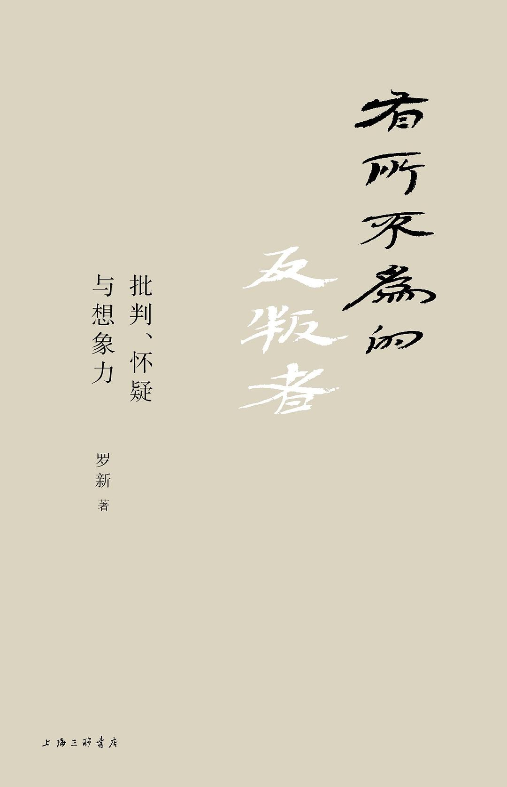

《有所不为的反叛者》

总体观点
历史并非客观中立的“过去事实记录”，而是在权力干预与时代意识形态塑造下不断被筛选、重塑与制度化遗忘的叙事建构；一切流传至今的史料本身皆是带着特定立场与偏见的史学作品。
历史学家的最高美德不是盲从经典或充当胜利者的歌颂者，而是坚守批判的怀疑精神，以“有所不为”的底线意识抵抗权力的驯化，揭开被官方修辞掩盖的历史真相与边缘声音。
走出近代民族主义史学的闭环迷思，需要运用严谨的语文学考证与跨学科想象力，重新审视族群起源神话与帝国边疆互动，还原古代东亚与内亚文明复杂流动的真实图景。
核心观点
-
1. 历史学家的第一美德不是博学或附和，而是保持批判怀疑的独立品格
学术研究如果丧失了对官方定论与群体狂热的警惕，就会沦为政治宣讲的工具；历史学家必须像法官盘问证人一样审视一切既定叙事。
面对历代正史中对帝王将相丰功伟绩的格式化吹捧，历史学者必须穿透颂歌表面，追问被遮蔽的战争代价与平民苦难。 -
2. 对抗权力对记忆的篡改，学者最强大的武器是坚守‘有所不为’的底线
在权势强大的修史机器面前，个体的抵抗往往艰难而微弱，但真正的反叛者可以通过拒绝迎合、拒绝背书、拒绝作伪证来守护良知底线。
齐太史兄弟宁死不屈记录‘崔杼弑其君’，正是以‘有所不为’的肉身献祭，确立了中国史官传统中最高贵的人格标杆。 -
3. ‘一切史料都是史学’：现存文献不是客观矿藏，而是加工过的历史叙事
颠覆传统实证史学‘史料即事实’的朴素幻想；任何流传至今的文献碑刻在成型之初就带有书写者的政治动机、阶层偏见与刻意删减。
出土的北魏墓志铭并非客观户籍档案，而是死者家族精心挑选赞词、甚至攀附华夏高贵谱系的修辞作品，本质是家族政治公关文告。 -
4. 遗忘并非自然发生，而是不同权力阶层与意识形态之间残酷的竞争结果
历史记忆从来不是自发沉淀的河沙，统治者有意识地通过焚毁、禁绝、重修历史来抹除威胁统治合法性的异质记忆，遗忘本身就是权力的产物。
清乾隆帝下令编纂《四库全书》的同时大肆推行‘文字狱’并系统性焚毁上万种涉及明清之际汉人反抗记录的典籍，实行国家级制度化遗忘。 -
5. 警惕民族主义史学的倒放电影，破除用现代国族边界框定古代历史的盲区
现代民族国家概念是十九世纪的产物；将今天固化的疆界与民族认同生搬硬套到两千年前的古代游牧与农耕人群身上，是对历史真实性的严重扭曲。
将汉匈战争简单解读为‘中华民族与外来异族’的对抗，忽略了匈奴帝国本身是由多语系、多血统游牧部落构成的政治联盟而非单一现代民族。 -
6. ‘黄种人’概念源于近代西方的殖民偏见与伪科学建构，而非先验生物事实
西方近代体质人类学发明‘黄色人种’并将其与‘停滞、阴险、黄祸’绑定，东亚知识分子却因文化误读将其当作华夏‘黄帝子孙’的象征予以认同，形成历史反讽。
奇迈可《成为黄种人》揭示林奈与布鲁门巴赫最初依据欧洲中心主义划分肤色色谱的过程，证明‘黄色皮肤’纯属西方近代知识话语的发明。 -
7. 族群起源传说是为了当下政治认同而发明的‘故事’，必须与真实历史严格剥离
所有古老民族的‘狼祖’、‘鸟卵生子’等血缘始祖神话，本质上都是部族在扩张联盟过程中为了巩固政治凝聚力而事后编造的认同符号，不可当作生物学源流信以为真。
突厥与蒙古各部流传的苍狼白鹿与阿史那母狼授乳传说，是草原游牧部落通过神圣化图腾维系跨血缘部落联盟的政治修辞工具。
全书结构
-
小序
阐明全书学术随笔的核心主旨：走出书斋用双脚丈量大地，以跨学科眼光反思历史学专业边界，追索历史纵深感并讲述不一样的历史故事。
罗新教授回顾自己从魏晋南北朝史与北方民族史专业研究出发，走向公众史学与非虚构历史写作的心路历程。 -
历史学家的美德
重塑历史学家的职业伦理标准：历史学家的首要美德并非对经典的盲目信从或为官方正统背书，而是保持坚韧不拔的批判与怀疑精神。
指出历史学者若缺乏对权力和既得利益的批判自觉，再渊博的学识也不过是沦为权势附庸的精致注脚。 -
有所不为的反叛者
全书灵魂篇章：历史写作天然带有一种抵抗遗忘的反叛特质，但在胜利者书写的伪史面前，学者最强大的尊严恰恰是‘有所不为’的坚守。
详述史官传统在权势胁迫面前宁可受戮也不篡改史实的历史坐标，界定真正的反叛者往往以克制与拒绝来捍卫历史底线。 -
一切史料都是史学
对实证史学‘史料等于客观事实’的根本性颠覆：任何遗存文献从产生那一刻起，就是特定书写者按照其时代偏见剪裁加工后的产物。
剖析《史记》与《汉书》对同一汉初历史事件叙述的微妙差异，揭示史料字里行间无不烙印着作者自身的价值预设与政治意图。 -
遗忘的竞争
阐释人类历史中记忆与遗忘的残酷权力博弈：统治者借助制度化手段消灭异己记忆，而边缘群体则在夹缝中展开艰难的对抗性记忆传承。
讨论古代王朝更替中对前朝档案文书的大规模销毁与钦定正史编纂，说明我们今天能读到的历史是‘遗忘竞争’后的幸存者叙事。 -
当人们都写汉语时
探讨东亚古代非汉族人群在接受汉字书写系统过程中的认同演变：文字不仅是交流工具，更是重塑社会结构与意识形态的强大中介。
分析鲜卑人建立的北魏政权在推行汉化过程中，鲜卑贵族如何通过汉字撰写碑志来重构家族门阀地位，并融入中古士族网络。 -
走出民族主义史学
呼吁反思并超越十九世纪滥觞的近代民族主义史学范式，拒绝用当代的国家疆界和单一族群概念去倒推和割裂流动的古代历史世界。
批评将古代长城两侧的胡汉冲突简单等同于近代民族国家之间主权侵略与反侵略的机械套用，倡导从区域互动与生态互补视角看待游牧与农耕关系。 -
世上本无黄种人——读奇迈可《成为黄种人》
深度评介西方种族分类思想史，揭露‘黄种人’概念作为西方殖民扩张时期伪科学产物的生成机制及其在近代中国产生的荒谬误读。
梳理从18世纪林奈植物学分类法到19世纪德皇威廉二世炮制‘黄祸图’的历史脉络，指出中国人自称‘炎黄子孙’与西方殖民主义界定的‘黄色人种’毫无渊源。 -
双螺旋的低语
审视近年来古DNA分子人类学对传统历史学与考古学的冲击与挑战，辩证看待生物学基因数据与文化认同、历史演进之间的复杂关系。
指出古代人群的基因谱系扩散并不等同于语言和文化的传播，警惕用简单的基因还原论替代对复杂社会历史机制的人文考证。 -
匈奴：故事还是历史
考辨司马迁《史记·匈奴列传》中‘淳维为夏后氏之苗裔’等匈奴起源叙述，厘清神话故事与早期草原游牧政治体真实演进的本质界限。
指出中原史家习惯用华夏谱系将周边异族纳入‘同祖共源’大一统叙事的修辞惯性，揭示匈奴实质是由多部落杂糅崛起的草原游牧帝国。 -
从于都斤山到伊斯坦布尔——突厥记忆的遗失与重建
追踪突厥部族从蒙古高原于都斤山起源，一路西迁至小亚细亚并最终建立奥斯曼帝国的宏大历史轨迹，展现群体历史记忆的断裂、重构与发明。
考察现代土耳其民族国家建立时期如何跨越数千年时空，重新将蒙古高原出土的《阙特勤碑》等古突厥卢尼字母石刻追认为民族精神图腾。 -
作为历史的狼祖传说
深入剖析北方内亚游牧民族普遍流传的‘母狼授乳’与狼祖起源神话，解析神话故事在部落联盟政治整合中扮演的意识形态黏合剂角色。
比较乌孙、突厥与罗马狼孩传说的异同，阐明游牧贵族如何通过宣称具有野兽的神异血统来确立其超凡脱俗的统治合法性。 -
北魏常山公主事迹杂缀
通过新出土的北魏拓跋皇室女性常山公主墓志铭，运用微观史学方法钩沉中古宫廷政治斗争的暗流与女性在门阀联姻中的真实命运。
结合《魏书》正史简略记载与出土墓志文字的互相印证，还原北魏中期拓跋鲜卑统治集团内部激烈的权力倾轧与皇室婚姻背后的政治妥协。 -
忽必烈的历史挑战——读杉山正明《忽必烈的挑战》
评介日本蒙元史大家杉山正明的代表作，重构忽必烈建立大元大蒙古帝国在打破欧亚大陆阻隔、奠定世界体系初型上的划时代意义。
指出忽必烈并非传统中原王朝式的儒家皇帝，而是立足大都与上都、依靠色目人财务官僚统辖海陆贸易网的大蒙古国全权大汗。 -
昔日太宗拳毛騧——唐与突厥的骏马制名传统
以唐太宗昭陵六骏之一的‘拳毛騧’为切入点，通过精湛的突厥语语文学考据，揭示初唐军事贵族文化与北方游牧文明深度交融的实证细节。
考证‘拳毛’实为突厥语Kula（黄褐色黑鬃黑尾马）或Bökli（高句丽）的音译转写，生动证明唐初皇室深受草原游牧习俗浸润的鲜明色彩。 -
达吕耶的佩剑——历史与想象的纠结
由一件流传的古代西欧骑士佩剑铭文引出学术思考，探讨历史学家在面对破碎物证时，如何平衡严密的实证考据与合理的历史想象力。
指出严谨的史料考订是筑牢历史大厦的地基，但缺乏富有同理心的历史想象力，历史研究就会沦为缺乏生命温度的枯燥考据碎片。 -
关于“西有敦煌，东有朝阳”的几点说明
考察辽宁朝阳地区在三燕、北魏、辽金时期作为东北亚多元文明汇聚枢纽的独特历史地位，补充中原中心论视域之外的区域史图景。
通过朝阳出土的北燕与辽代佛教壁画、舍利塔建筑风格，展现东北边疆走廊在沟通中原汉地、草原游牧与半岛诸国文明中的桥梁枢纽作用。 -
华夏文明西部边界的波动
从长时段地理与生态视角考察华夏文明在河西走廊与西域边缘地带的进退消长，阐明农牧交错带文明界线的动态韧性与弹性特征。
分析从汉唐经略西域屯田到明代退守嘉峪关的历史波动，指出文明边界的进退取决于中原王朝财政能力与游牧政权军事压力的周期性博弈。 -
中华帝国体制的内外轻重
总结古代中华帝国在处理‘内郡’（直辖郡县）与‘外藩’（朝贡羁縻）两套治理体制时的制度张力与权变智慧，提炼政治史深层逻辑。
对比汉唐羁縻府州体制与清代理藩院、内外蒙古盟旗制度的演变，揭示大一统帝国如何通过因俗而治的多元弹性体系维系超大规模边疆稳定。 -
本书所收文章来源
交代全书二十篇学术随笔在各大专业学术刊物、报刊副刊与学术讲座中的发表原始出处与修订说明，体现严谨的学术版本流变规范。
列明各篇论文从最初学术研讨会发言稿到面向大众读者的学术随笔之间的修订轨迹，呈现学者与公众开展知识对话的真诚姿态。